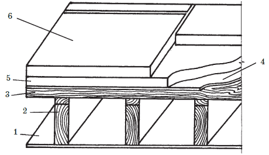
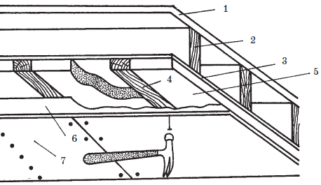
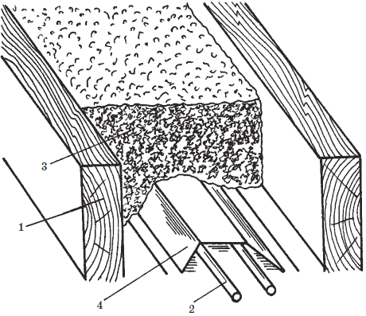
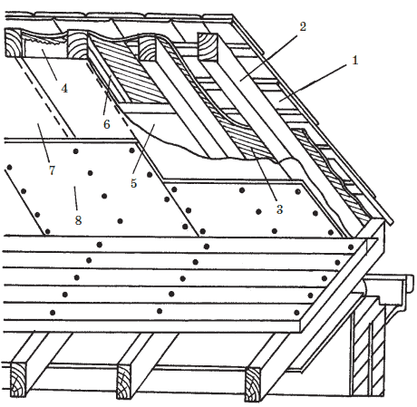

Теплоизоляция кровли.

Как правило, в домах с чердачными крышами кровля является защитой здания от атмосферных воздействий, чердачные помещения не используются как жилые и, не требуют для эксплуатации в зимнее время создания в них положительных температур. Исключение составляют только дома с мансардами, где весь объем чердака утепляется и он используется как обычные жилые помещения. В домах с холодными чердачными крышами утепляется только чердачное перекрытие являющееся полом чердака и потолком жилых помещений. Если чердак или мансарда используются в качестве жилых (или рабочих) помещений, то по скатам крыши прокладывается теплоизоляционный материал.
На заметку
Дома с плоскими крышами, не имеющие чердаков, или имеющие скатные крыши, где жилые или служебные помещения расположены непосредственно под крышей (так называемые совмещенные покрытия), обязательно имеют теплоизолированные крыши, чтобы не допустить слишком больших теплопотерь, т. к. через потолки помещение может терять до 50 % тепла.
Чердачное перекрытие (чердачные полы) утепляются изнутри чердака. Утеплять скаты сложнее. При новом строительстве дома теплоизоляционный материал можно уложить либо поверх обрешетки, либо между стропильными ногами со стороны чердачного помещения. Первый способ – более надежен, во втором случае ваш дом будет быстрее прогреваться и дольше сохранять тепло. Если дом эксплуатируется, то первый вариант сразу исключается и остается только один вариант – утепление изнутри.
Если утепляется плоская крыша, то приемлемы оба способа утепления: наружный и внутренний. Однако устройство наружной теплоизоляции требует от кровельщика большего профессионализма: внутреннюю прокладку теплоизоляции, при которой утеплитель приклеивается к потолку, может выполнить даже рабочий не очень высокой квалификации, это под силу даже новичку.
Иногда при теплоизоляционных работах может появиться необходимость изоляции водосборника или водопроводных труб, установленных или проходящих по чердаку.
Укладка теплоизоляционных материалов (плит, рулонов, сыпучих утеплителей) не требует особых навыков. Удобны в работе минераловатные плиты прямоугольной или клиновидной формы, которые легко укладываются и хорошо состыковываются между собой. При укладке рулонных и сыпучих утеплителей необходимо знать некоторые профессиональные секреты, позволяющих ускорить работу.
В соответствии с ГОСТ-16381-77 теплоизоляционные материалы классифицируются по следующим основным признакам:
• форма и внешний вид;
• структура;
• вид исходного сырья;
• средняя плотность;
• жесткость;
• теплопроводность;
• горючесть.
В отличие от ряда других строительных материалов марка теплоизоляционного материала устанавливается не по показателю прочности, а по величине средней плотности, которая выражается в кг/м (r). По этому показателю теплоизоляционные материалы имеют следующие марки: 15, 25, 35, 50, 75, 100, 125, 150, 175, 200, 250, 300, 350, 400, 450, 500. Марка теплоизоляционного материала представляет собой верхний предел его средней плотности. (Так, изделия марки 100 могут иметь r = 75-100 кг/м ).
За последние годы в нашей стране отмечается резкое ужесточение требований к теплотехническим характеристикам ограждений и это не случайно. Энергия – самое большое богатство человечества и экономия энергии (электрической, тепловой и т. п.) – залог экономического возрождения страны.
Согласно Постановлению № 18–81 Министерства строительства РФ от 11.08.1995 г., начиная с 1.09.95 г. проектирование, а с 1.06.1996 г. новое строительство и реконструкция должны вестись в соответствии с изменениями № 3 СниП 11-3-79 «Строительная теплотехника». По этим нормам с 01.06.2000 г. показатели расчетного сопротивления теплопередаче возрастают в 1,5–1,8 раза. На эти вопросы необходимо обращать самое серьезное внимание.
Таким образом, перед устройством или реконструкцией кровли вопросы достаточности принятого проектом или существующего слоя утеплителя должны быть проверены и при необходимости их толщины увеличены.
Учитывая то, что конструкции старой крыши обычно имеют высоту около 150 мм, то если кровлю оставляют на прежнем листе, а требуемый вентиляционный зазор между кровлей и утеплителем (не менее 50 мм) невозможно увеличить в верхнем направлении, в промежутке с балкой остается запас на изоляцию не более 100 мм. В этом случае утеплитель необходимо укладывать с нижней стороны балок.
Учитывая также то, что чердачные помещения сами по себе низкие, нижняя дополнительная изоляция конструкций должна быть как можно тоньше.
Совет
Минимальная толщина теплоизоляционного материала составляет 25 мм. Для основательного утепления помещения лучше использовать материалы толщиной 100 мм.
При устройстве теплоизоляции необходимо решить также и вопрос устройства пароизоляции. В первую очередь это касается утепления скатов.
Пароизоляция обеспечивается:
• зазором между кровельным покрытием и теплоизоляционным слоем;
• наличием особого пароизоляционного слоя (полиэтиленовой пленки или фольги). Некоторые теплоизоляционные материалы вготовом виде на внутренней поверхности имеют основание из фольги, предназначенное для обеспечения пароизоляции крыши. Большая разница в температуре снаружи здания и внутри без устройства вентиляционных отверстий в кровле и слоя пароизоляции может привести к образованию сырости в кровельном ковре и под ним. Как следствие этого – загнивание несущих конструкций, выпадение конденсата в теплоизоляционном слое, подтеки на потолке и т. п., т. е. процесс преждевременного разрушения здания.
До проведения мероприятий по утеплению крыши и чердачного помещения необходимо провести осмотр несущих конструкций крыши на предмет выявления гнили, плесени, мха, паразитов и отсыревших балок. Если такие дефекты будут обнаружены, до начала работ по устройству теплоизоляции необходимо отремонтировать конструкции стропил, иначе впоследствии при новых признаках разрушения и протекания кровли, все равно необходимо будет провести полный ремонт, но теперь уже с разборкой недавно уложенных паро– и теплоизоляционных слоев.
Следующим элементом подготовительных работ является проверка состояния электропроводки, проложенной на чердаке. При обнаружении повреждений проводки все дефекты должны быть немедленно устранены.
Наружное утепление плоской крышиЕсли здание эксплуатируется, то плоская крыша может быть утеплена снаружи жесткими теплоизоляционными плитами. Поверх брусьев несущей конструкции 2 укладывается сплошное основание из панелей 3, на которые укладываются теплоизоляционные плиты 5, а по ним – тротуарные плиты. При это необходимо профессионально проверить выдержат ли дополнительную нагрузку несущие конструкции и не даст ли впоследствии течь само кровельное покрытие ( рис. 70).

Рис. 70. Наружное утепление плоской крыши: 1 – потолок; 2 – брусок несущей конструкции; 3 – деревянная панель; 4 – гидроизоляционное покрытие; 5 – теплоизоляционный слой; 6 – бетонная плита
Внутреннее утепление плоской крышиНаиболее приемлемое решение внутреннего утепления плоской крыши – это утепление со стороны потолка ( рис. 71). Процесс устройства теплоизоляции не сложен, но размещение электроосветительных приборов нужно будет переделать. Теплоизоляционные плиты, подходящие для этого – это огнестойкие пенополистирольные плиты фирмы «Изотек» типа ПСБ-С-25 или ПСБ-С-35 толщиной 25 мм.

Рис. 71. Внутреннее утепление плоской крыши: 1 – кровельное покрытие; 2 – несущая конструкция; 3 – существующий потолок; 4 – планка; 5 – теплоизоляционная плита; 6 – полиэтиленовая пленка; 7 – декоративная панель
При устройстве теплоизоляции к потолку через каждые 40 см привинчиваются планки 4 из древесины мягких пород, начиная с первой планки, прикрепленной вдоль одной из стен, идущей перпендикулярно брусьям несущей конструкции 2. Вторая планка идет вдоль противоположной стены. Затем впритык к первой планке приклеивают пенополистирольную плиту 5, используя для этого специальный клей или мастику. Затем привинчивается следующая планка и вторая теплоизоляционная плита и т. д., чередуя укладку планок и плит пенополистирола. Когда теплоизоляционный слой выложен полностью, на всей площади потолка прикрепляют полиэтиленовую пленку 6. К планкам 4 прибиваются декоративные панели 7. В качестве крепежных деталей могут быть использованы оцинкованные гвозди.
Утепление пола нежилого чердачного помещенияУтепление пола чердака не требует одновременного утепления скатов крыши. Так как само чердачное помещение не утеплено, хоть и ограждено скатами крыши, оно как бы выполняет роль переходного помещения, своего рода «тамбура» между низкой наружной температурой и более высокой внутренней. При такой разнице температур и таком утеплении значение пароизоляционного слоя не велико.
Теплоизоляционный материал укладывается между брусьями стропильной конструкции. При этом важно не допустить того, чтобы были закрыты вентиляционные отверстия, расположенные на карнизе. Во избежание этого, обычно между брусьями чердачного перекрытия, вдоль карнизных свесов крепят фанерные или картонные полоски либо задерживающие планки.
Для утепления чердачного пола рулонным теплоизолятором необходимо:
• заделать специальной мастикой или пеной все щели в потолке вокруг труб;
• между двумя брусьями уложить рулон теплоизоляции и начать раскатывать его в направлении от одного карниза к другому, плотно прижимая его к укладываемой поверхности (но не продавливая). Рулоны лучше всего приобретать требуемой ширины, либо кратное расстоянию между балками. Если нужных размеров рулонов в продаже нет, то имеющиеся рулоны до начала работ обрезают по месту. Если же ширина утеплителя лишь немного превышает расстояние между балками, его можно уложить, немного сжав по бокам;
• после утепления всей поверхности чердачного перекрытия обрезки теплоизоляционного материала используют для утепления труднодоступных мест и участков сложной конфигурации;
• если между брусками несущей конструкции 1 ( рис. 72) проходят водопроводные трубы 2, на эти трубы, до раскатывания утеплителя 3, необходимо положить тонкую картонную полоску 4, которая исключит прямой контакт с теплоизоляционным материалом;

Рис. 72. Теплоизоляция водопроводных труб: 1 – брусок несущей конструкции; 2 – водопроводная труба; 3 – теплоизоляционный материал; 4 – картонная полоса
• утеплитель, уложенный на крышку люка, ведущего из основного помещения на чердак, приклеивается клеем ПВА или липкой лентой;
• проверяется прокладка электрических проводов по чердаку. Кабель крепится к брускам несущей конструкции или свободно кладется на теплоизоляционный слой. Класть утеплитель поверх электрических проводов запрещается.
Для утепления чердачного перекрытия сыпучими теплоизоляционными материалами требования аналогичны изложенным выше. Теплоизоляционный материал насыпается между брусками и при помощи планки разравнивается, чтобы получился слой одной толщины. Для утепления крышки люка по ее периметру прибивают борт из досок, затем на люк насыпается теплоизоляционный материал и сверху досками закрепляется панель (крыша). Таким образом, утеплитель как бы оказывается в ящике.
Утепление скатов крышиУтепление скатов внутри чердачного помещения стало наиболее популярным типом теплоизоляции крыши, благодаря возродившейся моде на чердачные пространства и мансарды. Высокая стоимость строительства в конце ХХ века заставила людей максимально использовать все возможности снижения стоимости 1 м площади дома, учитывая при этом и возможность получения дополнительной жилой площади за счет мансард.
Требование
Важно отметить, что утепляя скаты крыши, превращая чердачное перекрытие в перекрытие по сути междуэтажное, не нужно его утеплять, не нужно изолировать основное помещение от мансарды. Однако, при утеплении скатов крыши особое внимание необходимо обратить на качество пароизоляционного слоя.
Для изоляции скатов крыши лучше всего использовать жесткие или полужесткие теплоизоляционные плиты прямоугольной и клиновидной формы.
Технология укладки теплоизоляционного материала на скатах крыши дана на рис. 73.

Рис. 73. Утепление скатов крыши: 1 – кровельное покрытие; 2 – стропильная нога; 3 —гидроизоляционный слой; 4, 5 – теплоизоляционные плиты; 6 – планка; 7 – полиэтиленовая пленка; 8 – декоративная панель
Работа начинается с подготовки теплоизоляционных плит 4 необходимой толщины и ширины. Измеряется толщина досок и шаг стропильных ног. Ширина изоляционных плит должна на 1 см превышать расстояние между стропилами, а их толщина – на 2–5 см меньше высоты сечения стропильных ног. Дополнительный 1 см по ширине необходим для лучшей стыковки плит у стропильных ног. Толщина теплоизоляционного слоя выбирается так, чтобы между ним и кровельным покрытием оставался зазор 2–5 см, который обеспечит достаточную циркуляцию воздуха.
Для утепления карнизов берут две длинные полосы фанеры и по ним, как по пандусу, утеплитель спускают к карнизному свесу. Затем фанерные планки укладываются в проем между стропильными ногами до их упора нижними концами в карнизную доску. Теплоизоляционная плита спускается по уложенным таким образом планкам. При этом нужно помнить, что вентиляционный зазор 2–5 см должен быть оставлен и здесь. Так укладываются плиты по всей крыше от карниза до конька заподлицо с передними гранями стропильных ног. Куски и обрезки утеплителя, оставшиеся при подгонке основных плит, используются для теплоизоляции конька, дверных и оконных проемов, дымовых труб и т. п. После укладки теплоизоляционных плит на внутреннюю поверхность теплоизоляционного слоя натягивается полиэтиленовая пленка 7 толщиной не менее 0,2 мм и закрепляется к плитам скобами. Отдельные полосы пленки укладываются внахлест с последующей герметизацией стыков клеющей лентой. При работе необходимо следить, чтобы нигде не появилось разрыва пленки, иначе пароизоляция будет нарушена. Утепление скатов крыши завершено, осталось только закрыть тепло– и пароизоляционный слои декоративными панелями 8, которые можно прибить или привинтить к стропильным ногам. Размеры панелей могут быть любые, чаще всего они зависят исключительно от размеров входного люка.
Способов крепления теплоизоляционных плит много: при помощи гвоздей или шурупов, посредством мастики или клея, за счет силы трения (враспор), а плиты небольшой толщины 5 могут укладываться на планки 6, прибитые к внутренним сторонам стропильных ног (черепные бруски).